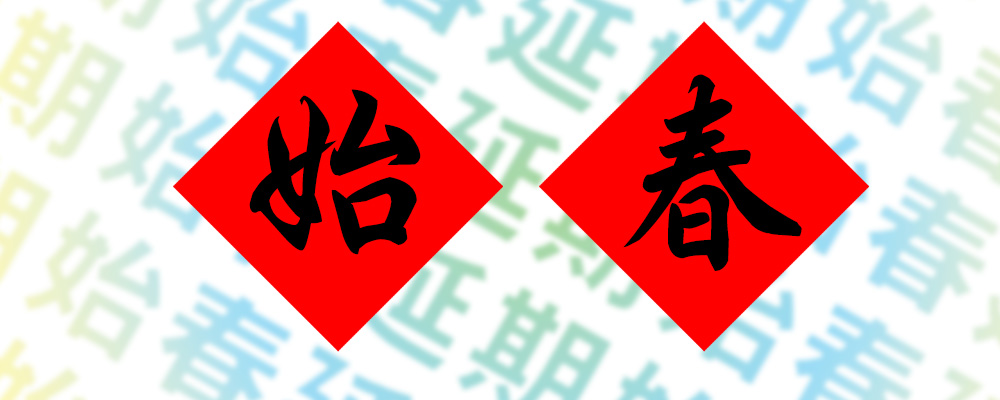
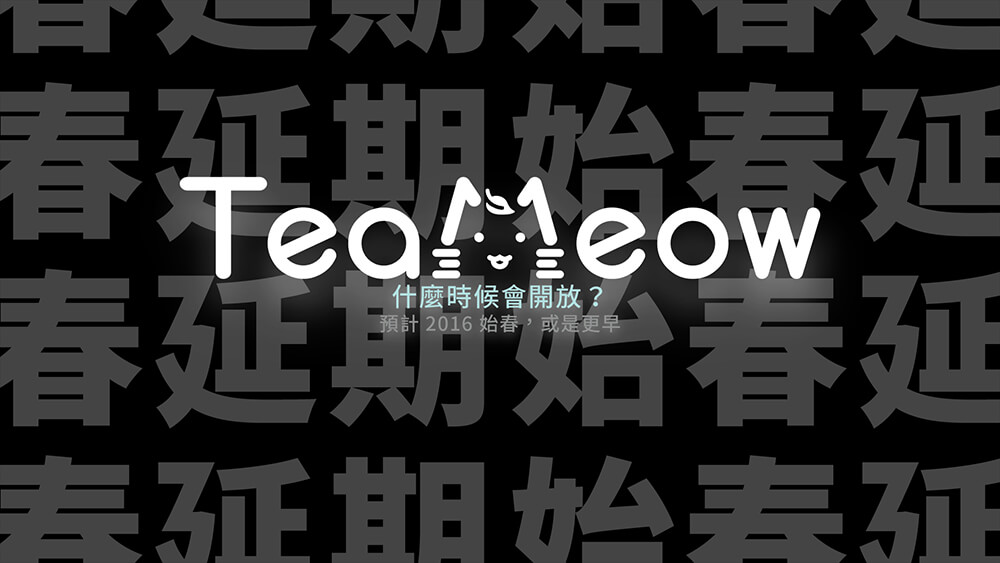
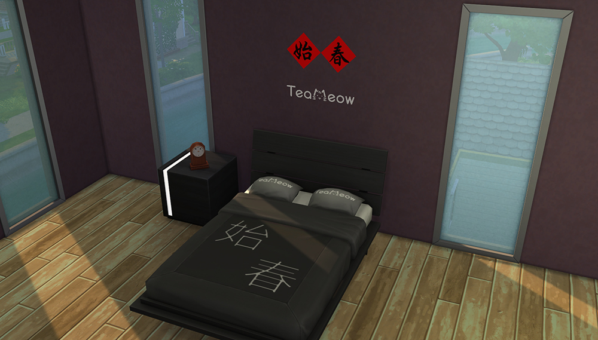
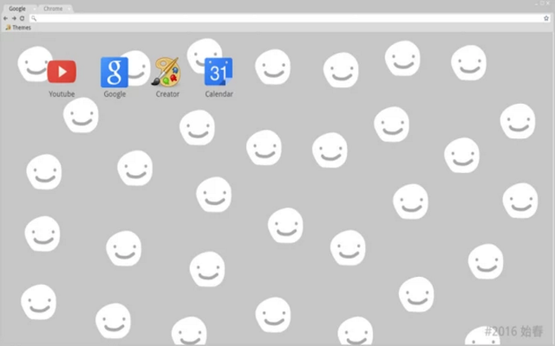

始春延期
沒了始春，這世間彷彿瞬間沒了價值，我只是想追逐眼前的目標，卻越陷越深，你.......願意成為始春的戰友嗎
距離始春來臨還剩下
始春是三小
一個寧靜的午後，踢喵出現了，正所謂雷聲大雨點小，洨洨安宣布延期了，從二零一六一路延期至現在.......
相關衍生作品

為始春而生
始春，我們再度擁有始春，喔耶！！
聯絡站長

始春 - 桌布
利用始春妝點您的桌面。
下載

始春 - 模擬市民4模組
利用始春豐富您的模擬市民。
下載

洨安 Chrome 主題
利用洨安主題美化您的瀏覽器。
安裝
始春延期頭貼
給我們一天，願帶給你滿滿始春。
下載
洨洨安大冒險
洨安的壓力很大，所以需要一些東西來紓解洨安的壓力。例如:洨洨安(?)
玩遊戲
開發者Blog
洨安 3D 模型
由 Yank Chung 製作
下載
洨安教友證 2.0
為美好的世界獻上洨安教，一個沒有歧視的歡樂天堂
前往
洨安教友證 1.0
為美好的世界獻上洨安教，一個沒有歧視的歡樂天堂
前往
Telegram 對話產生器
沒有，這我沒說過
前往
黏黏安
洨洨安的載入動畫
前往
洨洨安ｘ洨恐龍
T-Rex runner 紀念始春滿 1.87 周年而製作
前往